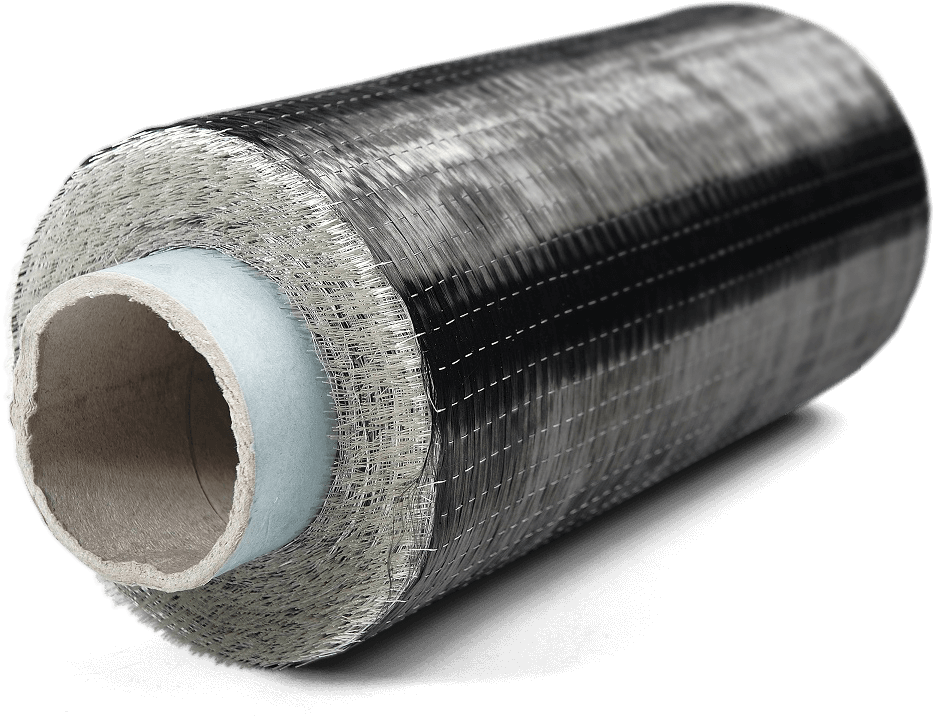

Усиление и ремонт композитными материалами
Вызвать
инженера
Вызвать
инженера
300+
Реализованных проектов
10+
Собственных бригад
20 лет
Опыт работы
Мы развиваемся в разных областях, но в приоритете усиление композитными волокнами несущих из железобетона и металлов, а также восстановление железобетонных конструкций.
О насУсилить конструкции и перекрытия, прорезать отверстия под инженерные коммуникации.
Наши проектировщики замоноличивали старые и прорезали новые отверстия под коммуникации.

Усилить конструкции и перекрытия, прорезать отверстия под инженерные коммуникации.
Наши проектировщики замоноличивали старые и прорезали новые отверстия под коммуникации.
Усилить конструкции и перекрытия, прорезать отверстия под инженерные коммуникации.
Наши проектировщики замоноличивали старые и прорезали новые отверстия под коммуникации.

Строительная компания «КТБ А-Строй» оказывает услуги реконструкции и усиления зданий. Мы завоевали репутацию подрядчика с добросовестным отношением к взятым обязательствам. В рамках реконструкционных мероприятий мы модифицируем элементы сооружений, восстанавливаем или повышаем их несущую способность. Особенно это важно, если здание ветхое или в аварийном состоянии.
Необходимость реконструкции появляется не только как следствие длительной эксплуатации, а также в случае смены функций, которые выполняет сооружение. Реконструкция здания обязательно подразумевается при внутренней перепланировке.
Оставьте заявку и мы свяжемся с Вами в ближайшее время